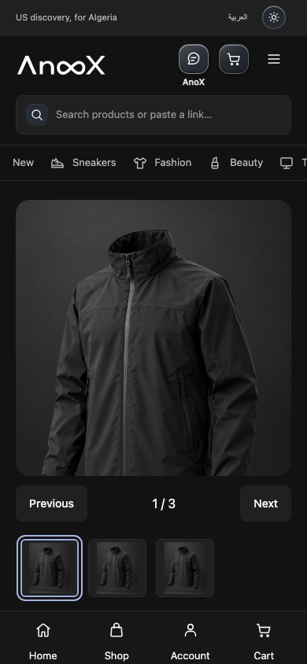
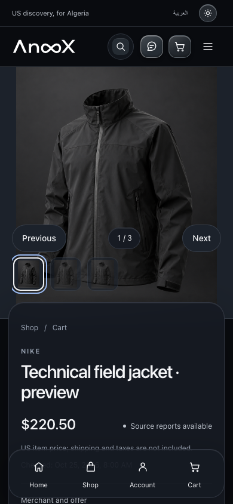

Inspect the real interface
Every image comes from the actual application HTML and its content-security policy, with local fixture responses. No decorative concept mockups stand in for application screens.
Working interface · owner review
Explore the same AnoX journeys before and after the visual transformation. These are screenshots of the functioning storefront, captured at matching viewport sizes.
01 / Compare
The flagship product composition, with supplied merchant information and real selection controls.
Loading the paired captures…

This baseline capture is not available yet. Select another screen; a missing capture is not a verified comparison.
390 × 844 · Chromium · synthetic fixtures

This candidate capture is not available yet. Select another screen; a missing capture is not a verified comparison.
390 × 844 · Chromium · synthetic fixtures
Images preserve their original proportions. “Actual size” provides a scrollable 1:1 view; it does not enlarge the underlying capture.
02 / Review context
Every image comes from the actual application HTML and its content-security policy, with local fixture responses. No decorative concept mockups stand in for application screens.
Compare long titles, ordinary packshots, absent images and expired evidence. The design must remain useful when the source does not provide a perfect photograph or current offer.
Saving a selection does not reserve stock. Unknown costs remain unknown. Payment collection and merchant purchasing remain unavailable in this review.